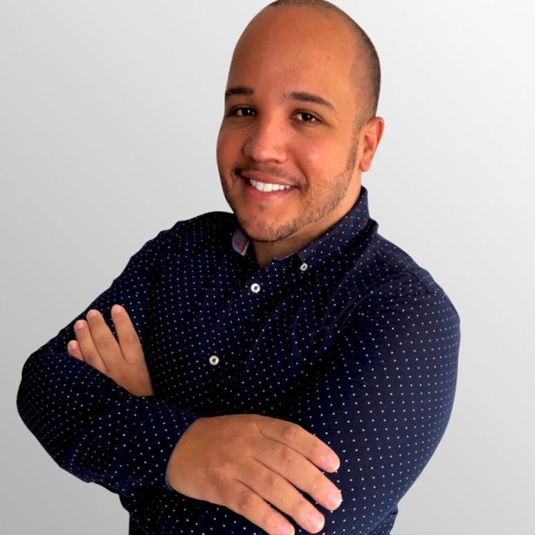

Everaldo Gonçalves da Silva

Summary
Over 5 years of combined experience in graphic design, production art, e-commerce and website administration. Demonstrated the ability to meet challenges and tight deadlines using strong problem solving and communications skills. Experience handling e-commerce data; metrics for acquisition and retention; conducting creative analysis and design best-fit solutions for multi-faceted campaigns, including interactive media, web design, digital photo manipulation and web development. I've assisted clients from all backgrounds and industries to design and implement thoughtful and impactful branding tools to help grow their business.
I am a bilingual professional (English and Portuguese), customer-oriented, who strives to help others' businesses become what they are meant to be and grow through branding, graphic and human-centred design. Provided professional, personal, creative solutions that facilitate relationships with customers and brands.
I have proven experience producing quality HTML and CSS code for use in content management systems. Working knowledge of SAP ERP, Adobe Dreamweaver, Photoshop, Flash, Fireworks and e-commerce Industry and platform experience (Shopify, VTEX, Dooca Commerce).
I am looking for an opportunity to advance my skills and contribute to my next employer's growth by presenting excellent design skills, development, and branding.
Phone: + 353 012 345-6789 | E-mail: everaldo_capstone.project1@gmail.com
Experience
Agência Tweex · Full-time
May 2020 - Present · 3 yrs 5 mos
Fortaleza, Ceará, Brazil
Ecommerce Analyst
- Helped create visually appealing websites and dynamic content utilizing responsive design/development best practices, using Shopify, Tray Corp, Vtex and Dooca Commerce platforms.
- Developed a strong understanding of product line and company voice, constantly leveraging to create up-selling + cross-selling opportunities.
- Translated the in-store category and overall e-Commerce strategy and incorporated it into the online experience, including the category pages' visual display and category-specific taxonomy, navigation, and search experience.
- Partnered with site managers to optimize online merchandising to grow sales within categories and overall e-Commerce strategies.
- Troubleshot and resolved customer issues, ensuring excellent customer relations across phone, e-mail, SMS, and chat platforms.
- Skills: Linx · Communication · Problem Solving · Teamwork · E-commerce Optimization · Analytical Skills · Adobe Photoshop · Foreign LanguagesSkills: Linx · Communication · Problem Solving · Teamwork · E-commerce Optimization · Analytical Skills · Adobe Photoshop · Foreign Languages
Michie Sushi Ranelagh · Part-time
Dublin City, County Dublin, Ireland
Sushi Chef
Jan 2017 - Dec 2019 · 3 yrs
- Period dedicated to linguistic development and cultural immersion. In conjunction with language studies, I held a part-time job as a Sushi-man in a reputable restaurant, leveraging skills in service standards excellence, customer service, and H&S procedures while developing my verbal communication skills in multicultural environments.
- Skills: Communication · Teamwork · Foreign Languages
São Paulo, São Paulo, Brazil
Web Designer
Aug 2012 - Jan 2016 · 3 yrs 6 mos
- Designed creative, original pieces of content for web, and interactive material such as banners, hotsites, packaging, e-mail marketing, signage, etc.
- Translated designs into HTML/CSS content.
- Direct data entry of Stock Keeping Unit (SKU) into SAP, maintaining strict adherence to data integrity standards.
- Updated content, design, and theme for website assets regularly, including product photography, descriptions, manuals, and supporting material, landing pages, and overall aesthetics for web presence.
- Edited, retouched and resized all images for marketing or web use.
- Maintained and organized electronic archive of design files, photos and videos.
- Followed brand standards and web style guide to ensure each brand maintains its unique visual identity.
- Skills: Teamwork · Microsoft Outlook · Analytical Skills · Adobe PhotoshopSkills: Teamwork · Microsoft Outlook · Analytical Skills · Adobe Photoshop
São Paulo, São Paulo, Brazil
Logistics Operations Coordinator
Aug 2012 - Jan 2016 · 3 yrs 6 mos
- Processed customer returns, warranty returns and collection of goods from customers.
- Prepared and carried out invoicing processing and reporting activities according to specific deadlines.
- Managed all escalation issues in a way that ensures clients are fully briefed, bringing solutions to problems.
- Organized incoming stock, documenting inventory weekly, reporting damaged or missing retail and accurately recording inventory with daily shipments.
- Prepared and maintained document control files.
- Skills: Problem Solving · Teamwork · Microsoft Outlook · Analytical Skills
Education
- Associate's degree, Systems & Network Management
- 2011 - 2014
- Grade: NFQ level 6
- Skills: Problem Solving · Teamwork · Microsoft Outlook · Analytical Skills
Senac
- Formação Adobe CS4
- 2010 - 2011
- Skills: XHTML · CSS · Adobe Fireworks · Adobe Dreamweaver · Adobe Flash
Licenses & certifications
- HTML Essential Training
- JavaScript Essential Training
Volunteering
- English and Karate Teacher
- CCHD Vietnam
- Dec 2018 - Jan 2019 · 2 mos
- Information Technology Instructor
- KAY'S Water World Hotspring Resort & SPA
- Contry: Philippines
Stock Controller
- South Sea Pearl Museum
- Contry: Philippines
The list of banners bellow were designed while I was working for Grupo Ri Happy as Web Designer
-
Banners 816 x 237 pixels
- Banners 713 x 50 pixels
- Banners 200 x 160 pixels
- Banners 177 x 155 pixels